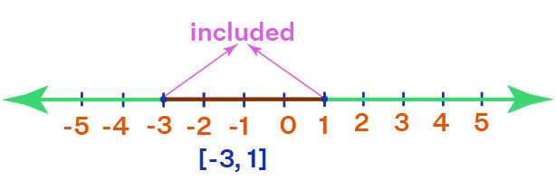
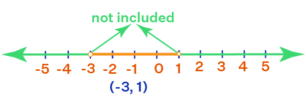
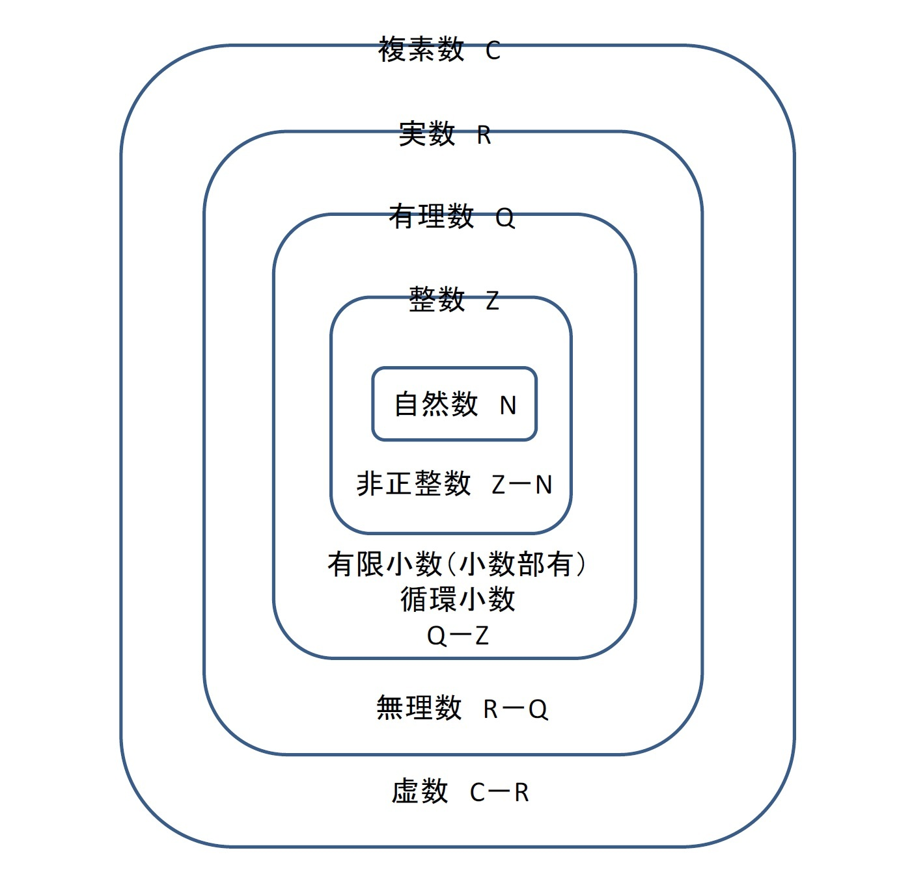

Supremum
集合の最小の上界
N(自然数)は{1,2,3,…,10}
上限は、集合内の値で最も大きいもの
上限は、集合を超えない範囲での最大の値
上限は集合内の最大の要素である「10」
自然数のうち10以下であるすべての要素の上限は10
.png)
infimum
集合の最大の下界
N(自然数)は{1,2,3,…,10}
下限は、集合内の値で最も小さいもの
下限は、集合を超えない範囲での最小の値
下限は集合内の最小の要素である「1」
自然数のうち1以上であるすべての要素の下限は1
.png)
| 記号 | LaTex | 意味 | 例 | |
| ∈ | \in | aは集合Aの要素である aは集合Aの一部である aは集合Aの元である aは集合Aに所属する aは集合Aに属する |
a ∈ A | |
| ∉ | \notin | bは集合Aの要素でない bは集合Aの一部でない bは集合Aの元でない bは集合Aに所属しない bは集合Aに属さない |
b ∉ A | |
| ∋ | \ni | 集合Aにaは属している 集合Aがaを含む |
A ∋ a | |
| ∌ | \notni | 集合Aにbは属していない 集合Aがbを含まない | A ∌ b | |
| 記号 | LaTex | 意味 | 例 | |
| ⊆ | \subseteq | 集合Bは集合Aと等しい 集合Bは集合Aの部分集合である 集合Bの要素はすべて集合Aの要素である 集合Bの元はすべて集合Aの元である 集合Bが集合Aの下位集合である 集合Bが集合Aに包含される |
B ⊆ A | |
| ⊈ | \nsubseteq | 集合Cは集合Aの部分集合でない 集合Cの要素は集合Aの要素でないものがある 集合Cの元は集合Aの元でないものがある 集合Cが集合Aの下位集合でない 集合Cが集合Aに包含されない |
C ⊈ A | |
| ⊇ | \nsubseteq | 集合Aは集合Bと等しい 集合Aに集合Bは属している 集合Aが集合Bを含む 集合Aが集合Bを包含する 集合Aが集合Bの上位集合である |
A ⊇ B | |
| ⊉ | \supseteq | 集合Cは集合Bに属していない 集合Cが集合Bを含まない 集合Cが集合Bの上位集合でない 集合Cが集合Bに包含されない |
C ⊉ B | |
| 記号 | LaTex | 意味 | 例 | |
| ⊂ | \subset | 集合Bは集合Aの真部分集合である 集合Bの要素はすべて集合Aの要素である 集合Bの元はすべて集合Aの元である 集合Bが集合Aの下位集合である |
B ⊂ A | |
| ⊄ | \notsubset | 集合Cは集合Aの真部分集合でない 集合Cの要素は集合Aの要素でないものがある 集合Cの元は集合Aの元でないものがある 集合Cが集合Aの下位集合でない |
C ⊄ A | |
| ⊃ | \supset | 集合Aに集合Bは属している 集合Aが集合Bを含む 集合Aが集合Bの上位集合である |
A ⊃ B | |
| ⊅ | \notsupset | 集合Cは集合Bに属していない 集合Cが集合Bを含まない 集合Cが集合Bの上位集合でない |
C ⊅ B | |
| ⊊ | \subsetneq | 集合Bは集合Aの真部分集合である 集合Bの要素はすべて集合Aの要素である 集合Bの元はすべて集合Aの元である 集合Bが集合Aの下位集合である |
B ⊊ A | |
| ⊋ | \supsetneq | 集合Aに集合Bは属している 集合Aが集合Bを含む 集合Aが集合Bの上位集合である |
A ⊋ B | |
| 記号 | LaTex | 意味 | 例 | |
| ∩ | \cap | 集合Aと集合Bの積集合 集合Aと集合Bの共通部分 集合Aと集合Bの両方に含まれる要素の集まり 集合Aと集合Bの両方に含まれる元の集まり 集合Aかつ集合Bに含まれる要素の集まり 集合Aかつ集合Bに含まれる元の集まり 集合Aと集合Bの交わり 集合Aと集合Bの交集 集合Aと集合Bの交叉 集合Aと集合Bの共有部分 |
A ∩ B | |
| ∪ | \cup | 集合Aと集合Bの和集合 集合Aと集合Bのいずれかに含まれる要素の集まり 集合Aと集合Bのいずれかに含まれる元の集まり 集合Aまたは集合Bに含まれる要素の集まり 集合Aまたは集合Bに含まれる元の集まり 集合Aと集合Bの合併 集合Aと集合Bの連結 集合Aと集合Bの結合 |
A ∪ B | |
| ∖ | \setminus | 集合Aから集合Bを除いた差集合 集合Aに含まれていて集合Bに含まれない要素の集まり 集合Aの要素のうち集合Bの要素と重ならない部分の集まり 集合Aと集合Bの共通部分を取り除いた集合Aの集まり 集合Aから集合Bを引いたもの 集合Aマイナス集合B |
A ∖ B | |
| - | − | - | 集合Aから集合Bを除いた差集合 集合Aに含まれていて集合Bに含まれない要素の集まり 集合Aの要素のうち集合Bの要素と重ならない部分の集まり 集合Aと集合Bの共通部分を取り除いた集合Aの集まり 集合Aから集合Bを引いたもの 集合Aマイナス集合B ただし、差集合にマイナス記号(-)を使用するのは非推奨 |
A − B |
| × | × | \times | 集合Aと集合Bの要素を全て組み合わせた直積集合 集合Aと集合Bの要素を全て組み合わせたデカルト積 集合Aと集合Bの要素を全て組み合わせたペアの集合 集合Aと集合Bの要素を全て組み合わせて、新しい集合を作る操作 集合Aと集合Bのクロスジョイン 集合Aと集合Bの直積 集合Aと集合Bのデカルト積(Cartesian product) 集合Aと集合Bの積(product) |
A × B |
| 記号 | LaTex | 意味 | 例 | |
| ⋂ | ⋂ | \bigcap_{i=1}^n |
複数の集合の積集合をまとめて表す演算子 複数の集合の積集合をまとめて表す演算子 複数の集合の全てに含まれる要素の集まり 複数の集合に含まれる要素の集まり 集合iから集合nまでに共通する要素の集まり 複数の集合の交わり部分を表す演算子 複数の集合の交集部分を表す演算子 複数の集合の交叉部分を表す演算子 複数の集合の共有部分を表す演算子 E_i=1からnまでの集合すべての共通部分 各集合に共通する要素全体の集まり |
|
| ⋃ | ⋃ | \bigcup_{i=1}^n |
複数の集合の和集合をまとめて表す演算子 複数の集合のいずれかに含まれる要素の集まり 集合iから集合nまでのいずれかの集合に含まれる要素の集まり 複数の集合の合併部分を表す演算子 複数の集合の連結部分を表す演算子 複数の集合の結合部分を表す演算子 E_i=1からnまでの集合すべての連結部分 各集合の要素をすべて含む集まり |
|
| ⨉ | ⨉ | \bigotimes_{i=1}^n |
複数の集合の直積をまとめて表す演算子 複数の集合のデカルト積をまとめて表す演算子 複数の測度の積を表す 複数の測度の積測度を表す i=1からnまでの測度の積 i=1からnまでの直積分布 複数の測度の直積を表す演算子 複数の測度の積測度を表す演算子 i=1からnまでの集合の直積 i=1からnまでの集合のデカルト積 各集合から1つずつ要素を選んだ順序付き組の集まり |
|
| 記号 | LaTex | 意味 | 例 | |
| ∅ | \emptyset | 空集合 何の要素も含まない集合 何の元も含まない集合 何の要素も属さない集合 何の元も属さない集合 |
∅ | |
| Φ | Φ | \phi | 空集合 何の要素も含まない集合 何の元も含まない集合 何の要素も属さない集合 何の元も属さない集合 ファイ ただし、空集合にファイを使用するのは非推奨 |
Φ |
| {} | {} | \{\} | 空集合 何の要素も含まない集合 何の元も含まない集合 何の要素も属さない集合 何の元も属さない集合 |
{} |
| 記号 | LaTex | 意味 | 例 | |
| ∁ | \complement | Aの補集合 集合Aに含まれない全ての要素からなる集合 集合Aに含まれない全ての元からなる集合 集合Aに属さない要素の集合 集合Aに属さない元の集合 集合A以外のものからなる集合 命題Aの否定 何の元も属さない集合 |
A∁ | |
| 記号 | LaTex | 意味 | 例 | |
| | | | | | |
条件Bを満たす要素Aの集合 条件Bを満たす全ての要素Aから成る集合 述語Bを満たすAの要素の集まり 述語Bを満たす要素Aを選び出した集合 Bのような全てのA 内包的集合表記 集合の内包表記 条件付き集合 |
{A|B} |
| 記号 | LaTex | 意味 | 例 | |
| P | P | P | べき集合 P(A) ある集合 A のすべての部分集合を要素とする集合 Aがn個の要素を持つ場合、P(A)は2^n個の要素を持つ A = {1, 2}の場合、 P(A) = {∅, {1}, {2}, {1,2}} | P(A) |
| F | F | \mathcal{F} |
集合族 F べき集合の任意の部分集合 あるべき集合の部分集合の集まり |
F = { {1}, {2} } ⊆ P(A) |
| F | F | \mathcal{F} |
σ加法族 F σ-加法族 F シグマ加法族 F べき集合の中で空集合と補集合と合併を含む集合族 合併は A ∪ B べき集合の中で空集合と補集合と可算個の和を含む集合族 |
F = {∅, {1}, {2}, {1,2}} ⊆ P(A) |
| B | B | \mathcal{B} |
ボレルσ加法族 ボレルσ-加法族 ボレルシグマ加法族 実数の開集合から生成される最小のσ加法族 実数の開集合から生成される最小のσ-加法族 実数の開集合から生成される最小のシグマ加法族 開集合・閉集合・区間・可算和・交叉で作れる集合全体の集まり 交叉は A ∩ B |
𝔅(ℝ) ⊆ P(ℝ) |
| B | B | \mathcal{B} |
ボレル集合 B ボレルσ加法族に属する各集合 ボレルσ-加法族に属する各集合 ボレルシグマ加法族に属する各集合 B = [0,1] B = (0,1) B = ℚ B = 有理数全体 |
B = [0,1] ∈ 𝔅(ℝ) |
| 記号 | LaTex | 意味 | 例 | |
| → | → | \to | 集合Aから 集合B への写像f を定義する 集合A の各要素に集合B の各要素を対応させる規則 集合A の各要素a に集合B の各要素b を対応させる規則 写像の定義域A と終域B を明示的に示す 写像の定義域A と終域B を明示する 写像のドメインA とコドメインB を明示的に示す 写像のドメインA とコドメインB を明示する AからBへの写像 BはAの写像 → は論理演算子ではない | f: A → B |
| ∘ | ∘ | \circ | 写像の合成（Composition of mappings） 写像fと写像gを合成した写像を表す 写像fと写像gの合成写像 fとgの合成写像 写像は関数と同義 | |
| ∘ | ∘ | \circ | 関数の合成（Composition of functions） 関数fと関数gを合成した関数を表す 関数fと関数gの合成関数 fとgの合成関数 関数は写像と同義 | |
| 記号 | LaTex | 意味 | 例 | |
| ∼ | ∼ | \sim | 任意の要素a が任意の要素bと同値であることを意味する 同値関係 | a ∼ b |
| 記号 | LaTex | 意味 | 例 |
| [a,b] | [a,b] |
数直線上の区切りの数を含む間の数(実数)の集合 a ≦ x ≦ b の事 端点を含む閉じている区間のイメージ 閉区間 closed interval  |
[a,b] |
| (a,b) | (a,b) |
数直線上の区切りの数を含まない間の数(実数)の集合 a < x < b の事 端点を含まない少し開いている区間のイメージ 開区間 open interval  |
(a,b) |
| 記号 | LaTex | 意味 | 例 |
| sup | \sup |
上限 Supremum 集合の最小の上界 N(自然数)は{1,2,3,…,10} 上限は、集合内の値で最も大きいもの 上限は、集合を超えない範囲での最大の値 上限は集合内の最大の要素である「10」 自然数のうち10以下であるすべての要素の上限は10 |
|
| inf | \inf |
下限 infimum 集合の最大の下界 N(自然数)は{1,2,3,…,10} 下限は、集合内の値で最も小さいもの 下限は、集合を超えない範囲での最小の値 下限は集合内の最小の要素である「1」 自然数のうち1以上であるすべての要素の下限は1 |
|
| 記号 | LaTex | 意味 | 例 |
| limsup | \limsup |
事象列の上極限を意味する 数列a_nの上限は1に収束する 数列a_nの部分列の中に1 に収束するものが存在する 数列a_nの項が実際に1になることもある |
.png) |
| liminf | \liminf |
事象列の下極限を意味する 数列a_nの下限は-1に収束する 数列a_nの部分列の中に-1 に収束するものが存在する 数列a_nの項が実際に-1になることもある |
.png) |
| 記号 | LaTex | 意味 | 例 | |
| ℕ | \mathbb{N} | 自然数の集合 0を含む正の整数の集合 {0,1,2,3,4,5....} |
ℕ | |
| ℤ | \mathbb{Z} | 整数の集合 自然数に0と負の数を加えた数の集合 ドイツ語の "Zahlen"（数）の略 ℕ + {...,-5,-4,-3,-2,-1} |
ℤ | |
| ℚ | \mathbb{Q} | 有理数の集合 整数と整数の比で表される数の集合 イタリア語の "Quoziente"（分数）の略 ℤ + {...,-1/5,-1/4,-1/3,-1/2,-1/1,1/1,1/2,1/3,1/4,1/5...} |
ℚ | |
| ℝ | \mathbb{R} | 実数の集合 有理数と無理数を加えた数の集合 数直線上の全ての点を表す数 ドイツ語の "Reelle Zahl"（実数）の略 無理数は無限小数や超越数を含む数の集合 無理数は分数で表すことのできない数の集合 ℚ + {...√2,√3,√5,√6,√7,e,√8,π,√10,...} e = 2.714... π = 3.141... |
ℝ | |
| ℂ | \mathbb{C} | 複素数の集合 実数部と虚数部から構成される数の集合 z=a+biと表すことのできる数の集合 フランス語の "Complexe"（複雑）の略 ℂ = {a + bi | a, b ∈ ℝ} |
ℂ | |
 |
||||